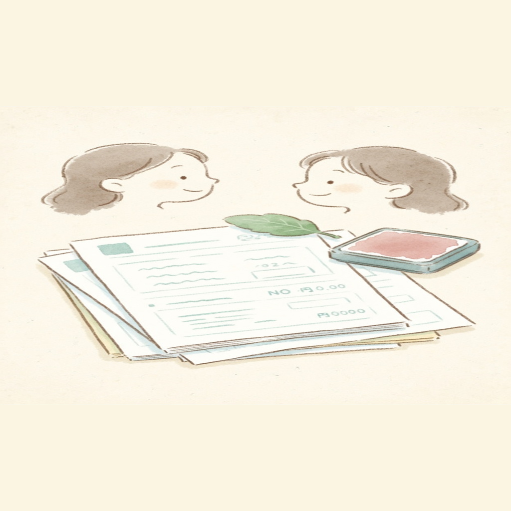
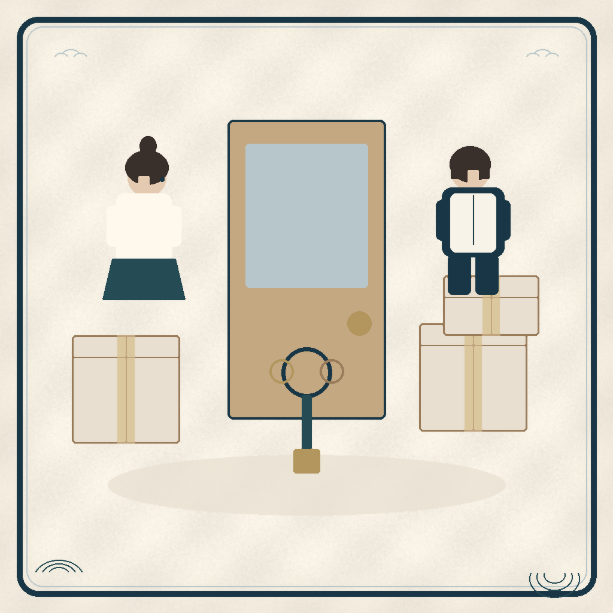

1
開くときの短いあいさつ
その日はじめて開いたときだけ、結の印と水彩の絵が1秒ほど出ます。タップですぐ飛ばせます。
結
- 1日1回だけ（2回目以降は出ません）
- 長さは約1.2秒・待たせない
- タブの移動では出ません
…
2
見出しの文字が下からあらわれる
画面に入ったとき、見出しが一行ずつすっと上がり、金色の線が引かれます（0.5秒）。
暮らしの道のり
スタンプで進める、暮らしロードマップ
章を選んで、絵の縁にあるスタンプを押していきます。
3
カードが順番にふわっと出る
スクロールで見えたカードから、少しずつずらして浮かび上がります（1枚0.45秒・一度だけ）。
1
二人の会社の慶弔・就業規則をもらう祝金や休暇の起算が入籍か挙式か、期限は何日かを、規程の文で確かめます。
2
これから使う名字を決めて、変える名義を書き出す口座・NISA・保険・免許・車。変える側だけでも一覧にしておくと楽です。
3
平日に区役所市民課で婚姻届を見てもらう夜間・休日は預かり審査になります。不備があると婚姻日がずれます。
4
保険の受取人を書き出す死亡時の受取人が親のまま残っていないかを、契約ごとに確認します。
5
NHKの契約を一つにできるか見る同居が始まったら、受信契約が二重になっていないかを確認します。
4
水彩の絵がひらいて、全体にもどる
絵が枠の内側からひらき、少し寄った状態から全体の絵に落ち着きます。最後は必ず絵の全体が見えます。
01婚姻届

02証明書
03名義変更
5
上の絵がゆっくり遅れて動く（視差）
スクロールすると、絵の枠が文字より少しゆっくり動きます。絵そのものは拡大せず、顔も切れません。
ふたりのデスク
ふたりの未来に、小さな一歩を。
いまの進みぐあいと、次にやることをまとめた画面です。

ずれの幅は最大20pxほど
6
タブを切り替えるときの動き
金色の線が選んだタブへすべり、中身が進む向きから0.2秒で入ります。前の画面が消えるのを待ちません。
次にやること
二人の会社の慶弔・就業規則をもらう
これから使う名字を決めて、変える名義を書き出す
平日に区役所市民課で婚姻届を見てもらう
スタンプで進める、暮らしロードマップ
結結婚準備
暮新生活
実毎年の見直し
育子育て
住住まい
守もしもの備え
次の期限
婚姻届を提出する○月○日見本
本人確認書類をそろえる○月○日見本
証人二人にお願いする○月○日見本
ふたりの、今日の一問。
人生の夢
今の人生で、やってみたい冒険は？
7
スタンプを「ぽん」と押す
押すと朱色の印が上から押しつけられ、紙が少し沈みます（0.35秒）。紙吹雪などは出しません。
01婚姻届絵の上のスタンプを押してみてください
8
右下の丸ボタンがゆっくり動く
Amity はふわふわ上下に、博士はゆっくり呼吸するように。博士は「ふたり」タブのときだけ出ます。
デスク・ロードマップなど：Amity（押すと相談）
このページについて
アプリ本体には入っていない見本です。端末で「視差効果を減らす」をオンにしている人には、動きなしで最終の形だけを出します。どれを本体に入れるか決まったら、その分だけ入れます。
アプリ本体には入っていない見本です。端末で「視差効果を減らす」をオンにしている人には、動きなしで最終の形だけを出します。どれを本体に入れるか決まったら、その分だけ入れます。